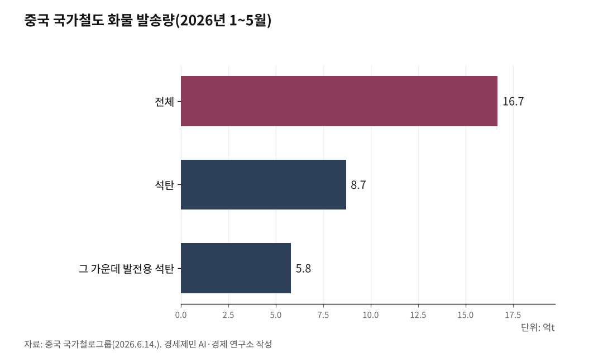

[중국철도②] 중국 철도화물 16억t, 석탄 빼고 다 늘었다
1~5월 16억7000만t, 1.8% 증가 그쳤지만 신에너지차 수출 110% 급증
석탄 절반이 정체한 사이 곡물·복합운송·국제화물열차가 두 자릿수로 뛰었다
중유반열 동부통로 누적 4만편, 중라철도 올해 1000만t 돌파
중국 철도화물이 외형은 주춤했지만 속을 들여다보면 무게중심이 빠르게 옮겨간다. 올 1~5월 국가철도 화물 발송량은 16억7000만t(2026년 1~5월)으로 전년 같은 기간보다 1.8% 느는 데 그쳤다.

그러나 석탄 같은 대량화물이 정체한 사이 신에너지차와 곡물, 복합운송, 국제 화물열차가 두 자릿수로 뛰며 화물 구조를 바꾼다.
완만한 증가의 속살
중국 국가철로그룹 자료를 보면 1~5월 발송량은 16억7000만t으로 1.8% 늘었다(2026년 6월14일 발표). 하루 평균 적재 차량은 18만6300대로 2.8% 늘었고, 5월2일에는 20만2400대를 실어 단일 기준 역대 최고치를 기록했다.
화물의 토대는 여전히 석탄이다. 같은 기간 석탄 발송량은 8억7000만t으로 전체의 절반을 넘었고, 그 가운데 발전용 석탄이 5억8000만t이다.
여름철 전력 수요에 대비한 물량이다. 절반을 차지하는 석탄이 정체하면서 전체 증가율도 완만해졌다.
고도화 신호, 신에너지차 110%
숫자의 진짜 이야기는 고부가 품목에 있다. 1~5월 상품차 수출은 82만4000대로 55.5% 늘었고, 그중 신에너지차가 42만2000대로 110.3% 급증했다. 1년 만에 두 배가 된 셈이다.
곡물은 4880만6000t으로 11.9% 늘었다. 철도와 수운을 잇는 복합운송도 758만TEU로 11.0% 늘었다.
도로화물을 철도와 내륙수운으로 옮기는 공로전철(公路轉鐵) 정책의 결과다. 중국은 14차 5개년 계획(2021~2025년) 기간 이 운송구조 조정을 밀어붙였다. 탄소 감축과 대기질 개선을 겨냥한 전환이다.
중유반열 동부통로, 누적 4만편
국제 화물열차의 성장세가 가파르다. 중국-유럽 화물열차(中欧班列, 중유반열)와 중앙아시아 화물열차의 1~5월 운행은 1만5506편으로 12.6% 늘었다.
특히 동부 통로가 두드러진다. 만저우리(滿洲里)와 쑤이펀허(綏芬河), 퉁장(同江) 3개 통상구를 거친 동부 통로는 개통 이래 누적 4만편을 넘었고 발송 화물은 390만TEU를 돌파했다(2026년 6월16일).
올해 통행량만 3000편을 넘었고, 개통 이래 누적 통행량은 중유반열 전국 통행량의 3분의 1을 넘어섰다. 중유반열 전체로는 2026년 5월 누적 개행 13만편, 발송 화물액 5200억달러를 넘어섰다.
남방의 부상, 중라철도·청두광저우
남쪽 통로의 약진도 또렷하다. 중국-라오스 철도는 올해 화물 운송량이 6월13일 기준 누적 1000만t을 넘었다(중국철로 쿤밍국그룹). 크로스보더 물량은 250만t을 웃돈다.
2021년 12월 개통 이후 크로스보더 일일 운행은 2편에서 최대 23편으로 늘었고, 견인력이 커져 칸당 수송력이 40% 늘었다.
신선식품이 효자다. 크로스보더 수입 과일은 6월11일 기준 누적 18만5000t으로 73.1% 급증했다. 중국과 라오스, 태국을 잇는 콜드체인 화물열차 덕에 동남아 열대과일이 최단 사흘 만에 중국 시장에 닿는다.
쓰촨 청두에서 광둥 광저우로 가는 신속 물류상품 화물열차도 6월9일 누적 100편을 넘어 청위와 웨강아오 대만구를 직결한다.
전환의 신호, 한국의 과제
중국 철도화물의 1.8%는 둔화가 아니라 전환의 신호다. 석탄 의존을 줄이고 신에너지차와 신선식품, 국제 화물열차 같은 고부가 영역으로 무게를 옮긴다.
일대일로(一帶一路)의 육상 통로인 중유반열과 중-아세안 황금통로인 중라철도가 그 축이다.
한국에도 함의가 크다. 동부 통로의 출발 도시인 다롄(大連)과 칭다오(靑島)는 인천과 서해를 사이에 두고 마주 본다. 인천항에서 컨테이너를 중국 동부 연안 항만으로 보내 철도에 환적하면 한국 화물도 14일이면 유럽에 닿는 중유반열에 올라탈 수 있다.
중국 철도화물의 구조 전환을 읽어야 그 통로에 올라탈 길도 보인다.
※ 이 기사는 AI 프로그램 클로드를 활용해 작성했습니다.

참고문헌
· "1至5月份国家铁路发送货物16.7亿吨", 新华网, 2026.6.14., https://www.news.cn/politics/20260614/2a98c7832813455abbe19314e52db073/c.html
· "China's rail freight, passenger traffic post steady growth in first five months", Xinhua, 2026.6.15., https://english.news.cn/20260615/fae401c61f1c45dc8eda9067fa8a2fe9/c.html
· "中欧班列"东通道"累计通行量突破4万列", 中新网, 2026.6.16., https://www.chinanews.com.cn/ydyl/2026/06-16/10641269.shtml
· "中欧班列开行突破13万列 发送货值超5200亿美元", 中新网, 2026.5.9., https://www.chinanews.com/cj/2026/05-09/10617987.shtml
· "China-Laos Railway freight volume exceeds 10 mln tonnes in 2026", CGTN, 2026.6.14., https://news.cgtn.com/news/2026-06-14/China-Laos-Railway-freight-volume-exceeds-10-mln-tonnes-in-2026-1NYAQ4xh50A/p.html
· "中老铁路今年以来累计运输货物突破1000万吨", 新浪财经, 2026.6.14., https://finance.sina.cn/2026-06-14/detail-inickkzv5707791.d.html
#중국철도 #철도화물 #중유반열 #동부통로 #중라철도 #신에너지차 #복합운송 #일대일로 #청두광저우 #환황해물류